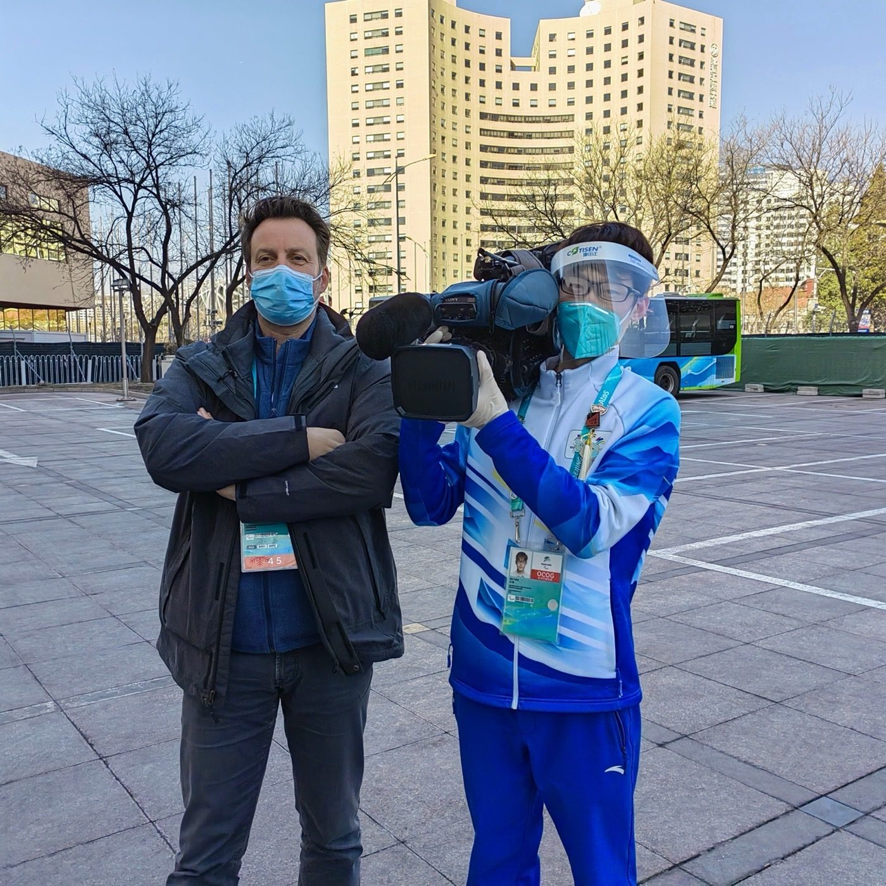
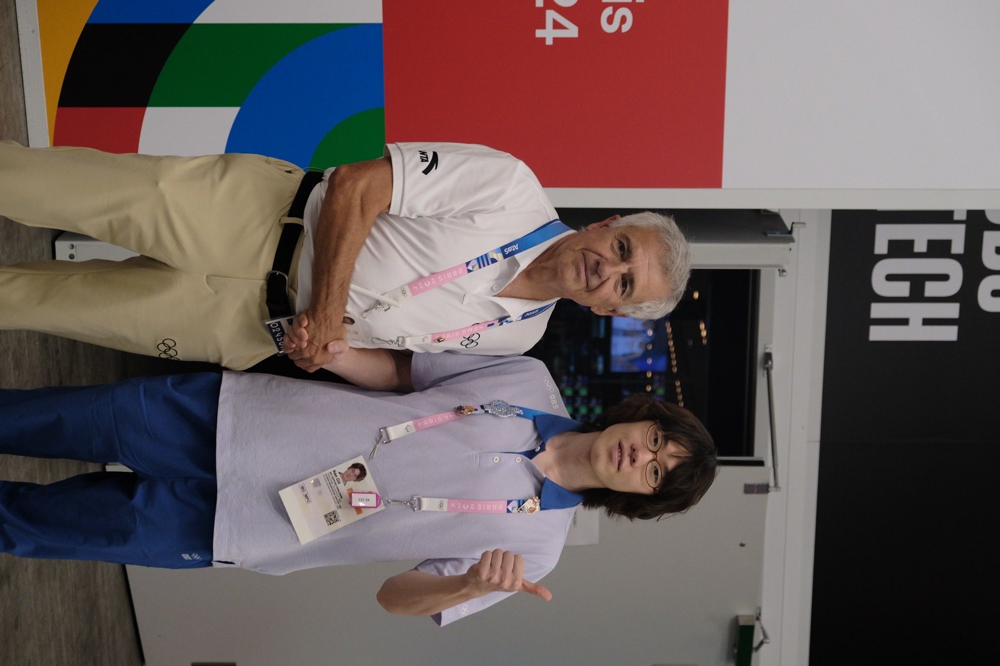
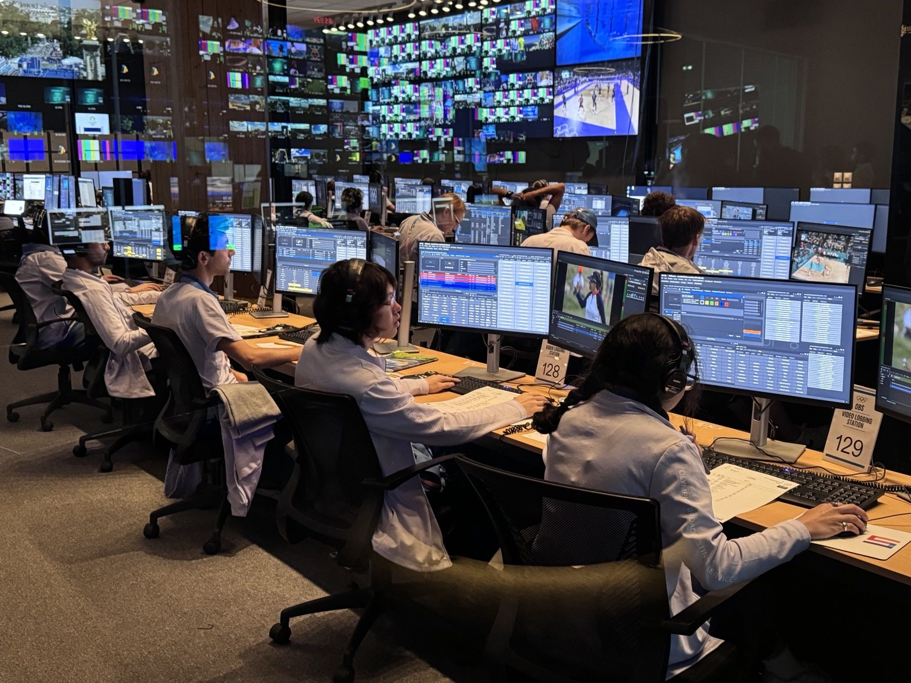
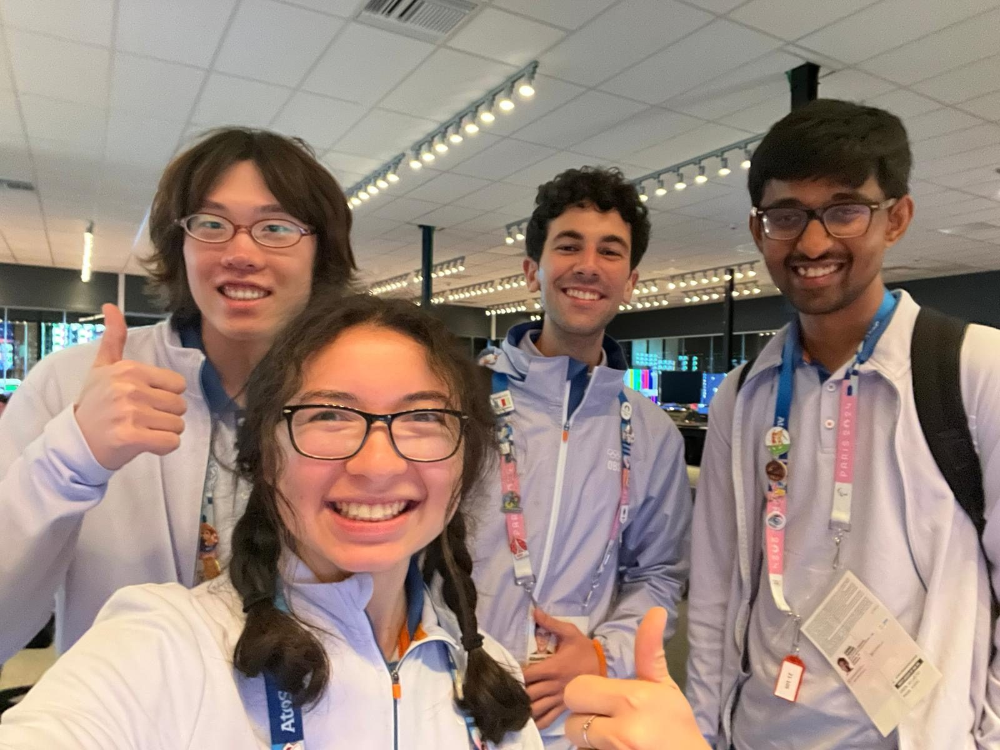

我在两届奥运的现场。
2008 年在鸟巢外当过观众，2022 和 2024，变成了在现场工作的人。如果你也被这些赛事打动过，我们大概有共同记忆。

ARCHIVE — 2008 / BEIJING
第一次，只是个观众
七岁那年，被父母带去鸟巢和水立方打卡。那时还不知道，十几年后自己会以另一种身份，重新站到奥运会的现场。
ARCHIVE — 2022 / BEIJING
冬奥与冬残奥志愿者
疫情期间全程闭环管理，选手和官员定点接送；我在签约酒店服务外宾 1000+，同时兼任酒店的"新冠联络员"，负责防疫监控和患者转运——那是一段口罩从未摘下、却离世界很近的时间。闭幕式那天，在鸟巢亲眼看完了这场盛大的告别。收到的媒体赞助商徽章，到现在还留着。

ARCHIVE — 2024 / PARIS
OBS 档案组实习生
作为 30 名实习生之一，受雇于 Olympic Broadcasting Services，在巴黎勒布尔歇展览中心（IBC）处理高尔夫与冲浪项目的全球转播素材标注。16 天，12 个时区，120+ 运动员，100+ 小时素材切片，0 失误——这组数字背后，是凌晨还在确认时间码的自己。

ARCHIVE — 2024 / TEAHUPO'O
塔希提岛的日出
冲浪项目的比赛场地远在塔希提岛，和巴黎隔着整整 12 个时区。为了赶上素材交付节点，见过很多次那里的日出——大概是这份工作留给我最奢侈的记忆。

On Site
现场感，是核心
两届奥运给我的最大收获，不是履历上的一行字，而是对"现场"这个词的重新理解——大型赛事从来不是一个人的舞台，而是无数协作者在精确的时间线里互相咬合的结果。体育的魅力，很大程度上也在这里：它用一种最直接的方式，把世界连接在一起。
如果你对这类幕后工作感兴趣，OBS 长期招募 Freelancer，可以在 careers.obs.tv 了解更多。